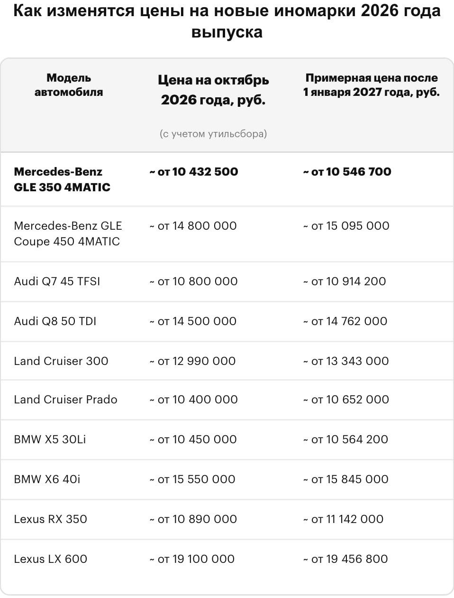
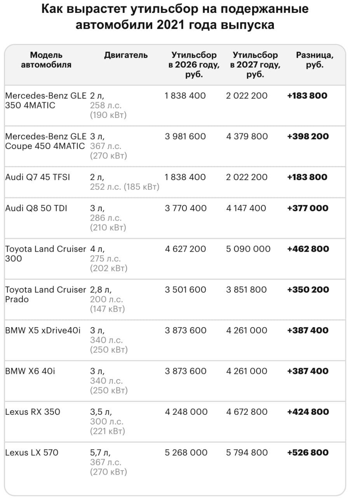
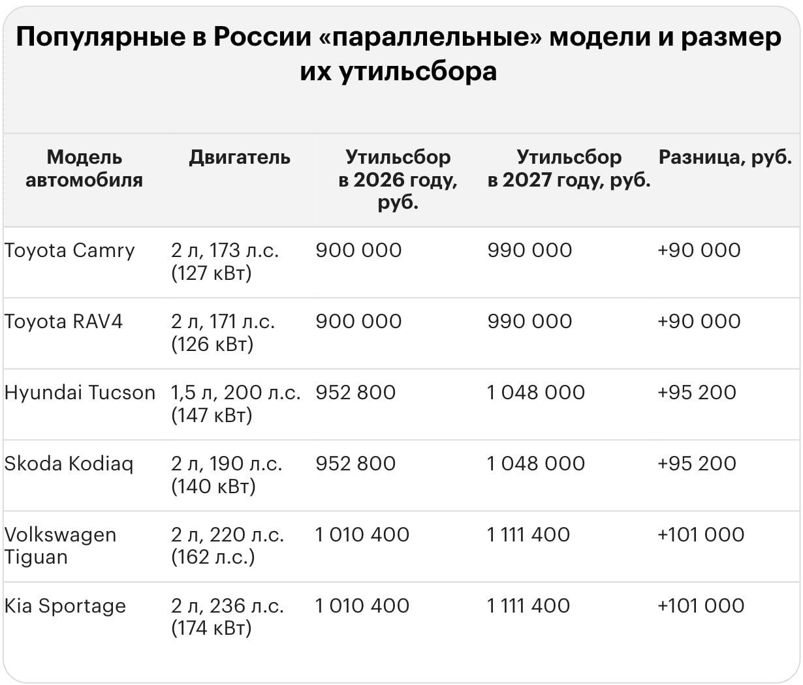
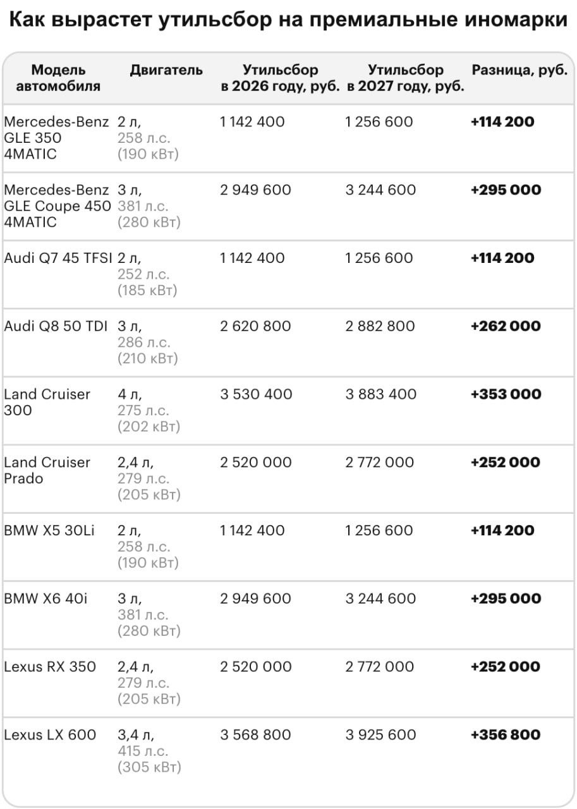
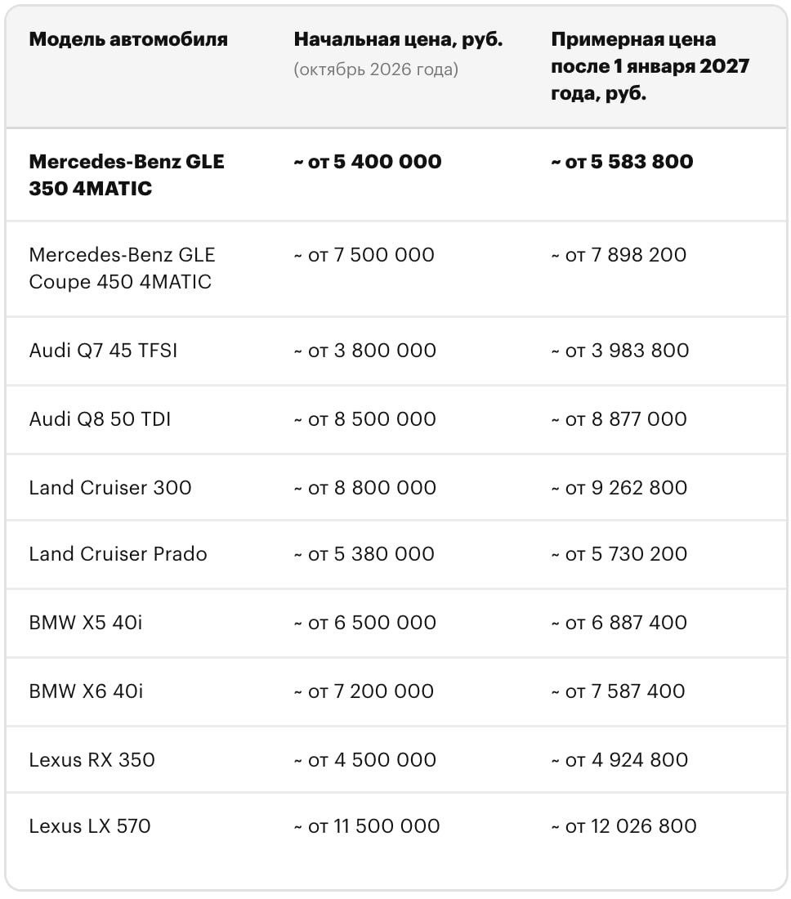

Тачки и Точка
@tachki
Тачки и Точка
@tachki
Мощные иномарки в России с нового года снова станут ещё дороже утильсбор опять поднимают.





Мощные иномарки в России с нового года снова станут ещё дороже — утильсбор опять поднимают.
Для некоторых машин сумму можно сравнить с «однушкой» в регионе. У подержанных авто старше трёх лет: Lexus LX 570 — ₽5,79 миллиона, Land Cruiser 300 — ₽5,09 миллиона, BMW X5 — ₽4,26 миллиона.
У новых машин тоже всё грустно: за Lexus LX 600 и Land Cruiser 300 утильсбор может составить около ₽3,9 миллиона.
🚙 Тачки и Точка
Для некоторых машин сумму можно сравнить с «однушкой» в регионе. У подержанных авто старше трёх лет: Lexus LX 570 — ₽5,79 миллиона, Land Cruiser 300 — ₽5,09 миллиона, BMW X5 — ₽4,26 миллиона.
У новых машин тоже всё грустно: за Lexus LX 600 и Land Cruiser 300 утильсбор может составить около ₽3,9 миллиона.
🚙 Тачки и Точка